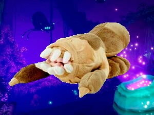

Steeve
Steeve is a tameable bug in the game DEEP ROCK GALACTIC (DRG). I could talk about the many wonders of DRG for hours, but for now I'll just talk the amazing Steeve. In DRG, you play as 1 of 4 dwarves. Your job is to go down to a moon named Hoxxes 4 to collect the natural resources it contains. On Hoxxes, the inhabitants are called glyphids. They normally are hostile and will attack you on sight. There is an unlockable perk in the game called beast master, it allows you to tame one of the glyphids. When the dwarves tame a glyphid, they always name it Steeve. Naturally the developers, Ghost Ship Games, made a plushie of Steeve. Steeve is probably one of my favorite parts of DRG. I already have Steeve's cousin plushie, the loot bug. It would be great to unite them.